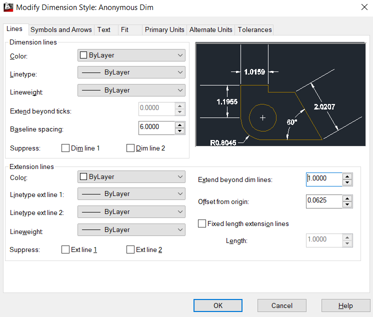
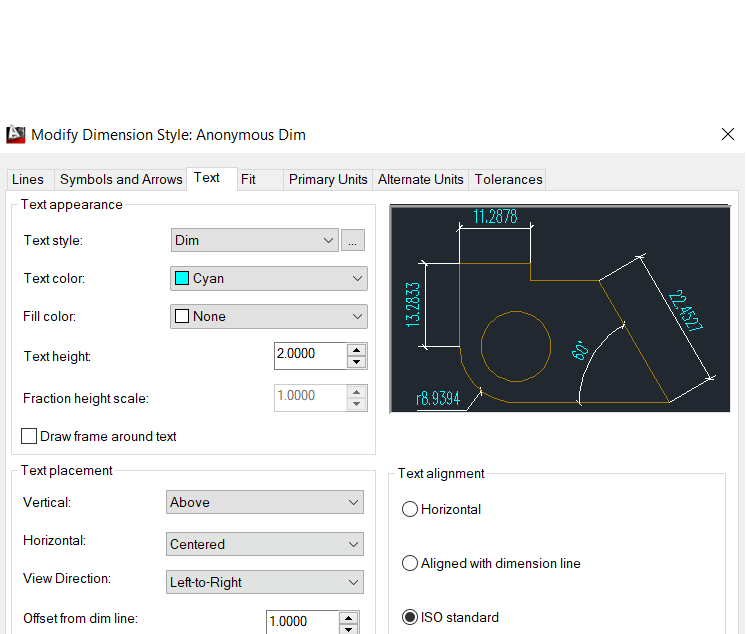
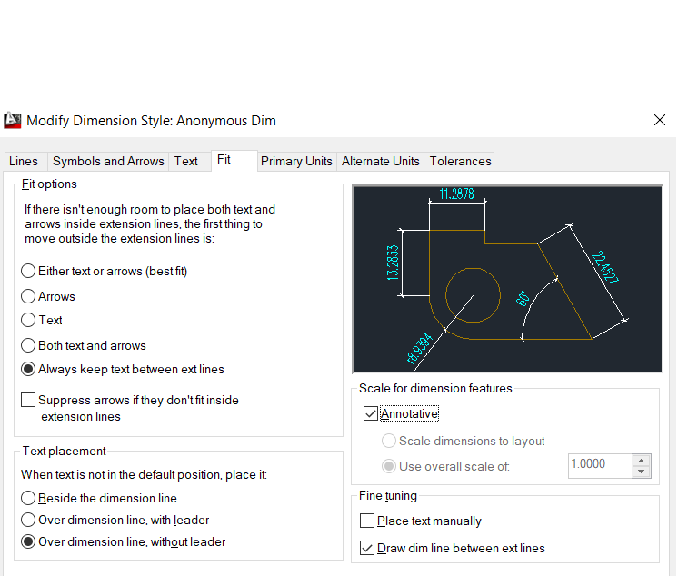
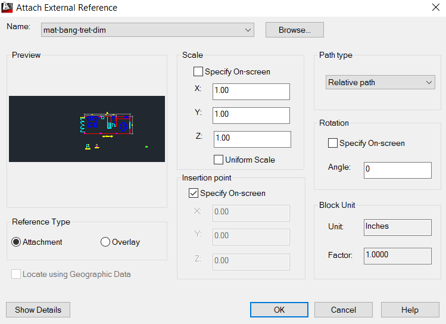

Thiết lập giao diện Autocad Classic và tùy chọn option cho Autocad
2016-Autocad 2017, Autocad 2018 (Than Le)
- Tắt bảng Start Up
- Chuyển qua chế độ AutoCAD Classic
- Tắt các thanh ribbon (Toolbar) không dùng
- Tắt Grid (F7)
-
Tắt gợi ý tại con trỏ chuột khi nhập lệnh, tắt hiển thị thông số (chiều
dài, góc nghiêng, các đường nét đứt) tại con trỏ chuột bằng cách Osnap
(os) -> Dynamic Input -> Bỏ tick 2 Enable ở dòng trên cùng của bảng chọn
-
Options (op) -> Display => Crosshair Size, Selection => Pick-box Size
CURSOR-SIZE set to 100 causes pick-box to show cross-hairs inside., User Preference => Shortcut menus in drawing area
- Clean Screen (On = Ctrl + 0)
- Lệnh line: l = Vẽ đường thẳng
- Lệnh Close: c = Khép vòng
-
Specify "numerical order" point: Chỉ định điểm => Click + Hệ tọa độ +
Truy bắt điểm
-
Hệ tọa độ: Hệ tọa độ tuyệt đối & Hệ tọa độ tương đối & Hệ tọa độ cực
-
Hệ tọa độ tuyệt đối: gồm 1 tham số đầu vào là độ dài của đoạn thẳng
(đường thẳng) (E.g: 100 + Space). Người ta thường dùng hệ tọa độ tuyệt
đối kết hợp với Ortho (F8: Chế độ vuông góc)
-
Hệ tọa độ tương đối: Hệ tọa độ Oxy gồm 2 tham số đầu vào là x và y (E.g:
@50,100). Lưu ý: gốc tạo độ sẽ thay đổi theo tọa độ điểm cuối cùng đã vẽ
(Điểm gần nhất)
-
Hệ tọa độ cực TƯƠNG ĐỐI: gồm 2 tham số đầu vào là độ dài của đoạn thẳng
và góc hợp với phương ngang (E.g: @100<- 30). Lưu ý: gốc tạo độ sẽ thay
đổi theo tọa độ điểm cuối cùng đã vẽ (Điểm gần nhất)
-
Có 2 phương pháp truy bắt điểm là thường trú (F3 = Osnap On) và
tạm trú (F3 = Osnap Off - The Best Choice)
-
Truy bắt điểm: (os = object snap - drafting settings),
Endpoint (Điểm đầu, cuối của đoạn thẳng),
Midpoint (Điểm giữa- Trung điểm),
Center (Trung tâm - Tâm của hình tròn - Tâm của cung
tròn), Nods (Một dấu chấm trên bản vẽ - Điểm nút, xuất
hiện khi chia đoạn thẳng, đường tròn hay cung tròn thành nhiều phần bằng
lệnh div (Divide)), Quadrant (Điểm 1/4 của hình tròn
nằm ở góc 12h,3h, 6h, 9h), Intersection (Giao điểm, khi
có 2 đường thẳng cắt nhau trên bản vẽ), Insertion (Điểm
chèn), Perpendicular (Từ một điểm bất kỳ bên ngoài hạ
một đường vuông góc tới đường thẳng kẻ trước), Tangent
(Từ một điểm bất kỳ bên ngoài hạ một vẽ một đường tiếp tuyến với đường
tròn), Nearest (Điểm gần nhất so với con trỏ chuột nằm
trên đối tượng - Vô số điểm)
- Shift + Right Click + Abbreviation
- View -> Viewports -> 2 Viewports
-
1.3.1. Vẽ các hình sau bằng lệnh Line với hệ tọa độ Decac tuyệt đối và
TƯƠNG đối
- 1.3.1. Sử dụng lệnh Line với tọa độ cực vẽ các hình sau
- 1.3.1. Sử dụng lệnh Line và các hệ tọa độ vẽ các hình sau/li>
- Truy bắt điểm From
- Truy bắt điểm Mid Between 2 Points
- Rectang (rec): Vẽ hình chữ nhật
- Explore (x): Phá khối
- Join (j): Ghép lại
- Erase (e): Xóa đối tượng
-
Trim (tr): Xén (Xóa, Cắt bỏ) (CÓ biên). Thông thường ta
chọn đường biên giới là All (mặc định)
- Circle (c): Vẽ hình tròn
-
Break (br): Xén (Xóa, Cắt bỏ) từ A -> B (KHÔNG biên).
Ứng dụng: Chia đối tượng làm 2. Lưu ý đối tượng nằm trên cùng sẽ được
chọn để chia
- Offset (o): Vẽ song song
Vẽ vẽ vẽ và vẽ
-
Khi mở file cad của người khác sẽ bị lỗi font => Cài thêm font của file
cad đó (Chọn text và nhìn vào thanh ribbon để xem là font gì sau đó lên
Google download và cài đặt). Hoặc tải bộ font đầy đủ của Thầy Hưng Del
và cài đặt theo Video hướng dẫn
-
Khi đã cài xong thì tắt và mở lại file CAD bị lỗi font nếu file CAD chưa
cập nhật font
- Text Style (st): Cài đặt Font chữ
-
Có 2 kiểu Font: CÓ .shx (Dùng trong CAD) và KHÔNG CÓ .shx (Dùng trong
Word)
-
Font CÓ .shx có thể thay đổi độ dày rất linh hoạt dùng chủ yếu trong vẽ
kỹ thuật
- Annotative
-
MText (t hay mt): Viết chữ. Dùng lệnh
Explode (x) để tách đoạn văn thành các dòng riêng biệt (Các dòng DText)
(Không thể dùng lệnh Join (j) để ghép lại nhưng vẫn có thể dùng Ctrl + Z
(Undo lại))
-
DText (dt): Viết chữ (Ít dùng vì có không có nhiều tùy
chọn chỉnh sửa)
-
Lưu ý: Khi đã dùng một Text Style nào để viết chữ trên CAD phải xóa hết
các chữ thuộc loại Text Style đó đi (và cần phải Set Current 1 Text
Style khác) thì mới có thể xóa được Text Style đó
-
Insertion(s): Trong CAD có nhiều đối tượng (Block,
Text,...) khi ta click chọn chúng mặc định có nút màu xanh, hình ô
vuông, click vào ô vuông này sẽ cho phép di chuyển phần tử. Ta gọi hình
ô vuông này là điểm chèn
-
Di chuyển Text vào giữa ô chữ nhật ta dùng lệnh Move, chọn Text, dùng
truy bắt điểm Insertion (rà chuột vào góc trên bên trái của Text), và
dùng truy bắt điểm Mid Between Two Point và truy bắt điểm Endpoint và
chọn 2 góc đối nhau theo đường chéo của hình chữ nhật
-
Viết x² và H2SO4 trong CAD: x2^ và H^2SO^4,
bôi đen 2^ ^2 ^4 và chọn b/a (Stack) ở bảng chọn kế bên trên
-
Polygon (polpol): Vẽ đa giác CAD cho 3 trường hợp để
vẽ:
- Vẽ đa giác đều khi biết độ dài 1 cạnh
-
Vẽ đa giác đều nội tiếp 1 hình tròn biết trước (Inscribed in circle)
-
Vẽ đa giác đều ngoại tiếp 1 hình tròn biết trước (Circumscribed in
circle)
-
Circle (c): Vẽ hình tròn. Có 6 cách bắt buộc phải nhớ. Vào bảng chọn
Draw chỉ vào Circle để 6 cách này
- Center, Radius
- Center, Diameter
- 2 Points
- 3 Points
- 3 Points
- Tan, Tan, Radius
-
Tan, Tan, Tan
(Chỉ có thể gọi ra trong bảng chọn Draw)
-
Arc (a): Vẽ cung tròn. Có 11 cách nhưng chỉ cần nhớ 1
cách đầu tiên 3 Points
- Donut (do): Vẽ hình vành khăn
-
Extend (ex): Kéo dài lao tới biên. Nhập lệnh, Chọn
đường biên, Click hoặc quét đúng vào nửa dưới hoặc nửa trên của đường
thẳng cần kéo dài. Click hoặc quét một nửa của đường thẳng sai, đường
thẳng sẽ không kéo dài được
-
Stretch (s):
Lệnh kéo dãn Free Style bá đạo, ứng dụng rất nhiều, không tồn tại khi
vẽ tay. Nhập lệnh, khi khung nhập lệnh hiện ra "Select objects" ta quét từ
phải sang trái (khung quét màu xanh là cây), cạnh nào co dãn quét một
phần, cạnh nào dịch chuyển ta quét hết, bấm Space để tiếp tục. Tiếp theo
ta chỉ định điểm để túm tay vào (bất kỳ đâu trên khung vẽ hoặc trên
hình) và kéo dãn ra theo ý muốn
- Rotate (ro): Xoay hình quanh 1 điểm cố định
- Scale (sc): Phóng to, thu nhỏ kích thước thật
-
Mirror (mi): Vẽ đối xứng qua 2 điểm chỉ định. Kết hợp
Ortho (F8) để dễ lấy đối xứng ngang, dọc
-
Align (al):
Lệnh căn chỉnh là tổng hợp của 3 lệnh: Move
m, Rotate ro, Scale
sc
-
Chamfer (cha): Vát góc. Chamfer => Distance => Nhập độ
dài cần vát của 2 cạnh => Chọn 2 cạnh cần vát.
-
Có thể vát nhanh tất cả các góc của một Polygon (hình phải liền mạch,
nếu chưa liền mạch thì dùng lệnh Join j). Chamfer => Polyline =>
Distance => Nhập độ dài cần vát của 2 cạnh => Chọn 2 hình cần vát.
-
Hệ quả với Distance là 0, 0 ta có thể nối 2 cạnh với nhau thành chữ L.
Tuy nhiên ta ít dùng Chamfer (cha) trong TH này mà ta
hay dùng
Fillet => Giữ phím Shift => Chọn 2 cạnh cần nối với nhau bất kể
Radius hiện tại là bao nhiêu
-
Fillet (f): Bo cong góc. Ta không chỉ định Distance như
Chamfer mà lúc này ta sẽ chỉ định bán kính cong Radius là bao nhiêu
-
Copy (co): Lệnh Copy trong một trang vẽ. Để Copy xuyên
biên giới ta dùng Ctrl+C Ctrl+V, tuy nhiên nó không bắt
chỉ định điểm Base Point, điều này làm
Ctrl+C Ctrl+V kém hiệu quả.
Muốn thêm phần chỉ định điểm Base Point ta dùng Ctrl+Shift+C Ctrl+V
(hoặc dùng Ctrl+Shift+V để Paste và tạo Block luôn mà không cần đặt
tên)
- Move (m): Lệnh di chuyển từ A -> B
-
Array (ar): Lệnh tạo mảng. Gồm 2 kiểu: Mảng hình chữ
nhật (Rectangular) các đối tượng sắp xếp theo hàng, theo cột và Mảnh
hình tròn (Polar) các đối tượng xoay quanh một điểm biết trước. Lưu ý
khi array ta chọn đúng cả số cột và số hàng, không được bỏ qua, không
cài đặt hoặc cài đặt sai column & row. Nếu không có thể gây ra lỗi, VD
không thể dùng fillet (f) để nối nhanh 2 đoạn thẳng thuộc 2 mảng khác
nhau
-
Mảng hình chữ nhật thì
khoảng cách giữa 2 cột là khoảng cách của tâm cột
Mảng hình tròn thì
khoảng cách góc giữa 2 đối tượng là khoảng cách góc của tâm đối
tượng
- Properties (mo hoặc Ctrl+1)
-
Hatch (h): Tô vật liệu. Lưu ý máy tính cấu hình yếu thì
hình tô Hatch không được quá to nếu không sẽ báo lỗi. Có thể xóa đường
viền đi khi đã to Hatch xong
-
Bản vẽ CÓ kích thước:Cầu đường, Nhà, CHi tiết máy.
Vẽ theo tỉ lệ 1:1
-
Bản vẽ KHÔNG có kích thước: Sơ đồ, Biểu đồ, Đồ thị, Lưu đồ thuật toán,
Sơ đồ khối. Vẽ theo tỉ lệ độ cao của chữ
- Thực hành vẽ bản vẽ không có kích thước:
-
Xuất phát từ 684W -> Tạo kiểu chữ (st) với Height 2mm, Width Factor 0.7,
có chọn Annotative. Ô chứa 684W là HCN (@12,5)
-
Lưu ý chọn lại bảng mã để gõ tiếng việt, (Rotate ro 90deg), (Stretch s),
Line(l), (Circle c), Break (br), Move (m), Array (ar, 20 Column,
Distance Between Column = 12/2*2 = 12), Explode (x)
-
Khi vẽ CAD đôi khi chúng ta cần vẽ những nét đậm hơn bình thường (Vẽ
thanh cái ,thanh góp), và chúng ta muốn thể hiện nó đậm ngay trực tiếp
trên bản vẽ và in ra nó cũng đậm, 2 đầu thanh cái được vuông vức đẹp hơn
ta dùng lệnh Polyline (pl), khác với Line Weight (bề dày nét in, 2
đầu đường thẳng sẽ bị cong tròn)
- Ở bài vẽ này ta chọn pl-width=1 cho 2 đầu thanh cái
-
Hủy chọn (Shift + Click), căn lề Middle-Left cho text "DỰ TRỮ",
DIM LINEAR (dli) lệnh đo kích thước, đo được kích thước
bản vẽ 273 x 215 => A4= 210 x297 (vừa khít, bắt buộc chọn >= 273 x 215
bởi vì kích thước bản vẽ này là tối thiểu)
- Để vẽ mũi tên ta dùng lệnh pl và cho 2 đầu width = 1 & 0
- Layer (la): Cấu hình Layer
- New Layer (Alt+N)
-
Có 2 cách quản lý Line Weight: cài trực tiếp trên Layer, quản lí theo
màu sắc thông qua file cài (cài nét in) trước khi in
- Set Current For Layer (Alt+C or Double Click)
- (layoff): Tắt layer chỉ định
- (layon): Bật tất cả các layer
-
Layer Lock (laylck): K-hóa 1 layer trong 1 lần nhập
lệnh, muốn k-hóa nhiều layer thì phải nhập nhiều lần. Layer Unlock
(layulk): Mở k-hóa 1 layer trong 1 lần nhập lệnh, muốn
mở k-hóa nhiều layer thì phải nhập nhiều lần
-
Layer Freeze (layfrz): Đóng băng. Lay Thawing
(laythw): Phá băng
-
lưu ý layon không làm hiển thị các layer freezed, tương tự với laythw
và layulk. Bật tắt liên tục dùng layon layoff, thường xuyên tắt (không
bao giờ dùng layer này) dùng layfrz
-
Tắt đi đa số layer giữ lại 1 layer dùng Layer Isolated
layiso (trái ngược với layoff): Bật layer chỉ định, tất cả layer còn
lại tắt đi, có 2 kiểu layiso: Off (Hide) & Lock and Fade (Lock +
Fade)
-
(layuniso): layiso gây ra tác dụng gì thì layuniso sẽ
bỏ đi tác dụng đó
-
Quản lý tốt layer:
- Phương án 1. Chọn layer trước rồi mới vẽ.
-
Chọn layer trong bằng lệnh (la) hoặc chọn trên thanh Ribbon hoặc dùng
Layer Make Current (laymcur) và chọn đối tượng có layer cần dùng để vẽ
- Phương án 2. Vẽ trước rồi mới chọn layer.
-
Layer Current (laycur): đối tượng được chỉ định sẽ
thuộc layer được set current
-
Match Prop (ma): tương tự Format Painter trong Word,
sao chép định dạng đối tượng về nét vẽ, về layer,...
Nên dùng
- Column 5, Row 15
-
Lưu ý khi array ta chọn đúng cả số cột và số hàng, không được bỏ qua,
không cài đặt hoặc cài đặt sai column & row. Nếu không có thể gây ra
lỗi, VD không thể dùng Fillet (f) để nối nhanh 2 đoạn thẳng thuộc 2 mảng
khác nhau
- Fillet (f)
- TCount (tco): Đếm tịnh tiến chỉ áp dụng cho text
- Find and Replace (find)
-
Break (br), Stretch (s), Copy (co), Move (m), Properties (mo or Ctrl 1),
Extend (ex), Explore (x), Array (ar), Rotate (ro), Mirror (mi)
-
Dimstyle or Dimention Style Manager (d): Cài đặt DIM



-
Chọn phương án đo: Nhập lệnh d ghép với 2 chữ cái đầu của phương án
cần đo
- Linear (dli): Đo khoảng cách hình chiếu
- Aligned (dal): Đo đường thăng
-
Baseline (dba): Đo nhảy cấp, khoảng cách 2 đường Dim trên và dưới sẽ là
6 như cài đặt. Lần đo đầu tiên không được chọn phương án này. Trường hợp
Baseline (dba) nhận nhầm điểm cần đo, nếu muốn Baseline (dba) bắt đầu từ
đường Dim khác ta chọn tùy chọn Select và Click vào đường Dim xuất phát
-
Continue (dco): Đo liên tiếp. Lần đo đầu tiên không được chọn phương án
này. Trường hợp Continue (dco) nhận nhầm điểm cần đo, nếu muốn Continue
(dco) bắt đầu từ đường Dim khác ta chọn tùy chọn Select và Click vào
đường Dim xuất phát
-
Lisp, Auto Lisp: Khái niệm ám chỉ những lệnh không có sẵn trong phần
mềm. Những lệnh này do người dùng tự lập trình, tự phát triển và cài
thêm vào CAD để dùng
- Lisp Cutdim
-
Load File Lisp (ap): Import File Lisp. Lưu ý phải giữ
lại (không được xóa) file Lisp Cutdim nếu không sẽ không dùng được các
lệnh của Lisp Cutdim
- Cut Dim (cd): Cắt chân Dim (đường Dim nằm dọc)
-
Bằng đầu (bd): Thêm hoặc bớt độ cao của đường Dim
(đường Dim nằm ngang)
(BÀI HỌC DÀNH CHO BẢN VẼ CÓ KÍCH THƯỚC)
-
Dim & Text Nhiều Tỉ Lệ Chỉ Bằng 1 Style Duy Nhất (1 kiểu Dim và 1 kiểu
Text) (Annotative)
- Dim & Text nhiều tỉ lệ trên Model
-
2 tình huống: Đã biết và Chưa biết in ra tỉ lệ là bao
nhiêu
-
Chưa biết => Tỉ lệ chọn sẽ là tỉ lệ phóng to (E.g: 100:1 or 100/1) hoặc
thu nhỏ (E.g: 1:100 or 1/100) hình vẽ CAD cho vừa với tờ giấy in ra. Tỉ
lệ x:y hay x/y nghĩa là x mm trên tờ giấy sẽ = y mm ngoài thực tế (khi
thi công)
-
Khi vẽ thì vẽ 1:1 nhưng khi Dim & Text thì phải chọn tỉ lệ cho đúng
rồi với Dim & Text (nghĩa là phải chọn tỉ lệ trước rồi mới Dim & Text
sau)
-
LƯU Ý CỰC KỲ QUAN TRỌNG: Phải vào Text Style (st) và Set Current kiểu
Text cần viết (Không được Set Current kiểu Text Style là Dim) (Nếu lỡ
viết các Text có Text Style là Dim thì phải xóa Text đó đi, Set
Current lại kiểu khác và viết lại. Việc chỉnh sửa Text Style của Dim's
Text trong phần chỉnh sửa Text là vô dụng, Annotative sẽ không được áp
dụng) rồi mới viết Text.
-
Trước khi Dim & Text phải tự hỏi bản vẽ đang chuẩn bị Dim sẽ được in
ra với tỉ lệ là bao nhiêu?
- Tỉ lệ bản vẽ Mặt bằng trệt sẽ được chọn tỉ lệ là 1:50
- Tính tỉ lệ bằng cách nào?
-
Tính tỉ lệ của HÌNH VẼ CHÍNH trước: (10000+800)/297 = 36.4, 4000/210=
19.1 => Lấy số lớn hơn (36.4), +- Dim % Text bên ngoài hình vẽ => Lấy tỉ
lệ 1:50 cho nó dư ra rộng rãi một chút
-
Đối với CÁC HÌNH CHI TIẾT KHÁC tỉ lệ sẽ là tỉ lệ so với HÌNH VẼ CHÍNH. Ở
bài này CÁC HÌNH CHI TIẾT KHÁC cần vẽ lớn gấp 2 lần so với HÌNH VẼ
CHÍNH. Ta có tỉ lệ của CÁC HÌNH CHI TIẾT KHÁC sẽ là: 2 * 1:50 = 1:25
- Dim & Text nhiều tỉ lệ trên Layout
- 2 lưu ý rất quan trọng:
-
Lưu ý 1: Hình to thì số và chữ phải to tương ứng, hình nhỏ thì số và chữ
cũng phải nhỏ tương ứng. Sau khi in ra nó được chuẩn
-
Lưu ý 2: 2 nút chức năng rất nguy hiểm nằm bên trái nút chọn tỉ lệ
tuyệt đối không được click vào.
PHẦN 1: IN BẢN VẼ KHÔNG KÍCH THƯỚC TRÊN MÔI TRƯỜNG MODEL
-
Kích thước hệ thống âm thanh 498 x 638 đã là kích thước tối thiểu =>
Chọn khổ giấy có kích thước >=
- Ctrl+P: Cài Đặt In
- Chọn tùy chọn "DWG To PDF.pc3" ở phần Name thứ 2
-
In ngang thì chọn khổ ngang và chọn Landscape (Drawing Orientation). In
dọc thì chon khổ dọc và chọn Portrait (Drawing Orientation)
-
Bấm vào "Properties" bên trái của "DWG To PDF.pc3" để cài đặt lại
"Printable Area"
- What To Plot: Window và Tick vào "Center To Plot"
- Plot Style Table: Cài nét in. Chọn "New" để tạo một chuẩn mới
-
Line Weight bề dày nét in sẽ được quyết định ở phần cài đặt nét in. Nếu
không cài đặt nét in, nó sẽ lấy Line Weight được cài đặt ở phần Layer để
in ra
-
Chuyển màu của nét in khi in tránh việc in ra bị xéo xéo mờ mờ nhiều khi
không nhìn thấy gì. Nguyên nhân là do mực máy in là đen trắng, mà màu
cần in thì xanh đỏ tím vàng, những màu sáng máy in đen trắng sẽ nhận
diện không tốt. Do đó cần chuyển hết tất cả những màu có trên layer quy
hết sang màu đen rồi mới in ra. Bằng cách: Click chọn Color 1 => Bấm
Shift+End => Ở phần bên trái là phần Properties, mục Color ta chọn là
màu Black
- Cài xong thì bấm vào "Save & Close"
-
Tick vào ô "Plot with plot styles" ở bảng "Plot - Model" (Thông thường
mặc định có đã Tick sẵn): Xét đến file nét in vừa cài, nếu không tick,
phần vừa cài đặt bên trên sẽ bị vô hiệu hóa
- "Preview" xem thử
PHẦN 2: IN BẢN VẼ CÓ KÍCH THƯỚC TRÊN MÔI TRƯỜNG MODEL
-
Bản vẽ có kích thước chia làm 3 loại: Bản vẽ 1 tỉ lệ bao gồm 2 loại: Bản
vẽ 1 tỉ lệ 1:1, Bản vẽ 1 tỉ lệ khác 1:1 và Bản vẽ nhiều tỉ lệ
- Bản vẽ 1 tỉ lệ 1:1: Làm tương tự với bản vẽ không kích thước
-
Bản vẽ 1 tỉ lệ khác 1:1 (In Mặt bằng nhà lên tờ A4 tỉ lệ 1:50). Có 2
phương án lựa chọn: Co nhỏ hình để vừa với khung giấy A4 (Scale hình gây
lỗi Dim & Text => KHÔNG NÊN), hoặc
Phóng to khung A4 lên để vừa với hình (Phương án TỐI ƯU)
-
Bản vẽ nhiều tỉ lệ: Như đã nói ở bên trên có 2 phương án: 1 là scale
hình, 2 là scale khung. Việc scale hình gây lỗi Dim & Text nên ta không
áp dụng. Việc scale khung thì không thể đáp ứng cho tất cả các hình do
hình có nhiều tỉ lệ cho nên
việc in bản vẽ nhiều tỉ lệ trên Model là không thể => Bố cục, in ấn
trên Layout
PHẦN 3: IN BẢN VẼ CÓ KÍCH THƯỚC VÀ KHÔNG CÓ KÍCH THƯỚC TRÊN LAYOUT
(Nên làm cách này, đơn giản, dễ quản lí)
- Layout là miền làm việc dành riêng cho bố cục bản vẽ
- Điều chỉnh lại giao diện Layout cho tương đồng với Model
- Options (op): Vào Options chỉnh lại 2 chỗ như video
- Mview (mv): Khoét lỗ trên Layout
-
Quy tắc bố cục trên Layout: 1 hình vẽ 1 tỉ lệ sẽ được hiển thị trong
Mview (mv)
-
Set Layer Defpoints cho khung Mview (mv) để khi in ra khung Mview (mv)
sẽ không hiện ra trên giấy in
- TÓM TẮT CÁC BƯỚC BỐ CỤC BẢN VẼ TRÊN LAYOUT:
-
Chuột phải vào tên Layout chọn "Page Setup Manager" và cài đặt theo
hướng dẫn (Đến bước cuối cùng là Set Current là xong)
-
Copy & Paste khung giấy đã vẽ sẵn trên Model (A4, A1,...) qua Layout
-
Dùng lệnh Mview (mv) khoét lỗ bên trong khung vừa Paste (nhớ bố cục vị
trí cho phù hợp vì có thể có nhiều Mview (mv) trong một khung giấy),
Click Double vào Mview (mv) vừa tạo, Zoom đến 1 hình nào đó, Chọn tỉ lệ
(1:1, 1:50 hoặc là 1:25,...) và khóa lại, Điều chỉnh khung Mview (mv)
sao cho hình trên Model được hiển thị đầy đủ, Tiếp tục khoét lỗ cho các
hình trên Model khác nếu muốn nó được in chung trong một khung giấy, Lưu
ý khung giấy là có giới hạn do đó việc chỉnh tỉ lệ in thế nào sẽ quyết
định khung giấy chứa được nhiều hay ít khung Mview (mv) (điều kiện là
khung Mview (mv) phải hiển thị đầy đủ hình trên Model cần in)
-
Chọn tất cả các khung Mview (mv) và Set Layer Defpoints cho nó để khi in
ra sẽ không in các khung Mview (mv) này
-
Ctrl+P và làm theo hướng dẫn. Thành quả là một file PDF nằm ngoài
Desktop
- Mỗi khổ giấy in là 1 Layout riêng biệt để tránh nhầm lẫn
-
Có thể đổi tên của Layout thành tên dễ hiểu và có ý nghĩa hơn. E.g:
Layout A4-NGANG, Layout A1-NGANG
- Có thể tạo thêm bao nhiêu Layout tùy thích
-
CHÚ Ý ĐỌC KỸ: Có thể sửa nội dung của khung giấy đã vẽ
sẵn trên model (ĐƯỢC COPY & PASTE SANG LAYOUT) trên Layout mà không làm
ảnh hưởng đến nội dung của khung giấy trên Model. VIỆC CHỈNH SỬA NỘI
DUNG KHÔNG ĐƯỢC COPY & PASTE QUA LAYOUT (NỘI DUNG BÊN TRONG KHUNG Mview
(mv)) TRÊN LAYOUT CẦN PHẢI ĐƯỢC THỰC HIỆN CẨN THẬN VÌ NÓ SẼ TÁC ĐỘNG
TRỰC TIẾP ĐẾN NỘI DUNG ĐÓ TRÊN MODEL
-
Vẽ thô: Vẽ toàn bộ hình vẽ với kích thước chuẩn 1:1 lên Model, chỉnh
Layer cho tất cả các nét đó
-
Sang Layout bố cục. In ra bao nhiêu khổ giấy tạo ra bao nhiêu Layout
tương ứng (1 khổ giấy = 1 Layout riêng biệt)
-
Có thể mò tỉ lệ hình vẽ thông qua Mview (mv) một cách nhanh chóng (nhớ
chọn tỉ lệ sao cho hình không chiếm hết Mview (mv), chừa khoảng trống
cho Dim & Text), Xong rồi thì khóa lại.
-
Vẽ xong rồi, Layer xong rồi, Layout xong rồi, Bố cục xong rồi thì mới
Dim & Text TRÊN LAYOUT (Dim & Text không cần chọn tỉ lệ nữa bởi vì ta
đã chọn tỉ lệ này khi bố cục bản vẽ trên Layout) (Không cần Dim & Text
trên Model nữa) (Tuy nhiên Dim & Text hiển thị trên Model sẽ không
đúng và không giống với Layout, điều này là hiển nhiên, không sao cả)
- Ctrl+3: Mở Tool Palletes
- Block có thuộc tính và Block không thuộc tính
-
1 Block chuẩn gồm 2 thành phần: Hình vẽ cố định và Thuộc tính thay đổi
được (Tùy chọn thuộc tính)
-
Hình vẽ cố định có thể được tạo ra bởi tất cả các lệnh đã học bao gồm cả
vẽ hình và Text. Tuy nhiên Thuộc tính thay đổi chỉ có thể được tạo ra
bởi một lệnh duy nhất duy nhất Attribute Definition (att)
-
Attribute Definition (att): Tag không viết có dấu và
không viết dấu cách
- Block (b): Lệnh tạo Block
-
Insert (i): Lệnh chèn 1 Block đang được sử dụng trên
bản vẽ
-
Viết có dấu Thuộc tính thay đổi: Không thể bỏ dấu cho Text trực tiếp cho
Thuộc tính thay đổi => Mở Properties và bỏ dấu cho Text bình thường.
-
Trình tự Copy Block sao cho hiệu quả nhất: Tìm Block => Copy & Paste và
File CAD MỚI => Phá khối => Hiệu chỉnh lại Layer,
Color, Line Type, Line Weight của Block về tiêu chuẩn của mình (Layer 0,
By Layer, By Layer, By Layer) => Chỉnh kích thước: Tùy thuôc vào loại
bản vẽ (Có kích thước (chỉnh về tỉ lệ 1:1) và không có kích thước (chỉnh
theo độ cao của chữ)), scale sao cho phù hợp và dễ nhìn là được => Vẽ
thêm sửa nét cho Block => Thêm thuộc tính cho Block => Sau khi đã hoàn
hảo hết rôi thì khởi tạo Block bằng lệnh Block (b) => Tạo một
File CAD MỚI đặt tên là thư viện của tôi (file này chỉ
dùng để chứa Block) và Paste thành quả vào.
-
Chỉ tạo thư viện Block (Tool Pallettes): Khi đã sưu tầm được Block rồi,
có File CAD chứa tất cả các Block đã Edit rồi
-
Thêm Block vào thư viện Block (Tool Pallettes) bằng lệnh ADCenter
(adc)
-
Trong ADCenter, Block được sắp xếp theo thứ tự abc, Do đó cần phải cân
nhắc đặt tên cho các nhóm Block có điểm chung theo một quy luật, mã số
nhất định sao cho hiệu quả, thuận lợi trong việc tìm kiếm (VD: DEN_1,
DEN_2,... QUAT_1, QUAT_2,...)
-
Khi có một Block mới được thêm vào File CAD thư viện của tôi, phải dùng
lệnh ADCenter (adc) để thêm vào thư viện Block (Tool
Pallettes), Block mới không thể tự động thêm vào thư viện Block (Tool
Pallettes)
-
Sửa tên Block trong thư viện Block (Tool Pallettes) không gây ảnh hưởng
đến File CAD thư viện của tôi
- Export Pallettes: Lưu lại, Share,... Làm theo Video hướng dẫn
- Import Pallettes: Làm theo video hướng dẫn
-
Lỗi Pallettes khi xóa File CAD thư viện của tôi: Những Block trong
Pallettes tương tự như Shortcut ở ngoài Desktop, sửa, xóa không gây ảnh
hưởng đến File Block gốc (File CAD thư viện của tôi), ngược lại nếu xóa
hoặc thay đổi đường dẫn hoặc thay đổi tên File CAD thư viện của tôi,
Block nằm trong Pallettes sẽ bị lỗi.
-
Trường hợp File CAD thư viện của tôi bị xóa đi (bị mất luôn) thì... mọi
chiện chấm hết
-
Trường hợp thay đổi đường dẫn File CAD thư viện của tôi: Cách khắc phục?
Làm theo video hướng dẫn dùng lệnh Options (op) và Browse đến thư mục
chứa File CAD thư viện
-
Khi Import Pallettes của người khác phải làm thêm một bước là dùng lệnh
Options (op) và Browse đến thư mục chứa File CAD thư viện, xong rồi mới
có thể sử dụng được Pallettes
-
Trường hợp thay đổi tên File CAD thư viện của tôi: Cách khắc phục? Chỉ
có một cách duy nhất đó là sửa lại tên cũ. Nếu không nhớ được tên cũ thì
Click vào 1 Block trong Pallettes và xem ở ô Command bên dưới có tên cũ
hiện ra, sửa lại tên File cho giống là được. Nếu Click vào 1 Block trong
Pallettes mà không thấy hiện thông báo gì ở phần Command thì kéo Box
Command cao thêm một chút (chiều dọc).
-
Cần có cả File làm việc và các File CAD gốc (dùng để XREF) trong máy thì
mới có thể XREF vào File làm việc được
-
Khi XREF (xr) Quan trọng: Hệ số Factor phải là 1.

-
Nếu hệ số Factor khác 1, ta chỉnh đơn vị của cả 2 File CAD (File CAD
đang edit và File CAD XREF) về Inches bằng cách nhập lệnh Drawing Units
(un)
- Không thể phá khối được ảo ảnh XREF, không sửa được
-
Cắt lấy một phần của XREF: Bước 1: Bao kín lại phần đó bằng lệnh c, rec
hoặc lệnh vẽ đa giác,... Bước 2: Nhập lệnh XCLIP (xc), yêu cầu Select
Object hiện ra => Ta chọn vào hình XREF (bất kỳ đâu trên hình) => Chọn
Select polyline New boundary => Chọn đường bao vừa vẽ ở bước 1 => Done
-
Ứng dụng của XREF: Chỉ cần 1 người sửa File CAD gốc nếu cần thay đổi,
thông báo lên Group là sửa cái gì, những người khác chỉ cần mở File CAD
làm việc của riêng mình và nhập lệnh XREF (xr), Reload lại File XREF là
mọi chỉnh sửa ở File CAD gốc sẽ được cập nhật
- Tạo File CAD tiêu chuẩn (CAD Template)
- Cấu hình CAD cho mượt mà (Xem Bài 2)
- Tạo Layer (la) chuẩn (Xem Bài 10)
- Tạo Text Style (st) chuẩn (Xem Bài 7)
- Tạo Dim (d) chuẩn (Xem Bài 12, 13, 14)
- Tạo Layout chuẩn (A4-NGANG, A1-NGANG,...) (Xem Bài 14)
-
Lưu lại với tùy chọn "AutoCAD Drawing Template (*.dwt)" vào thư mục
Template (Mặc định được chọn sẵn),
HẾT RỒI